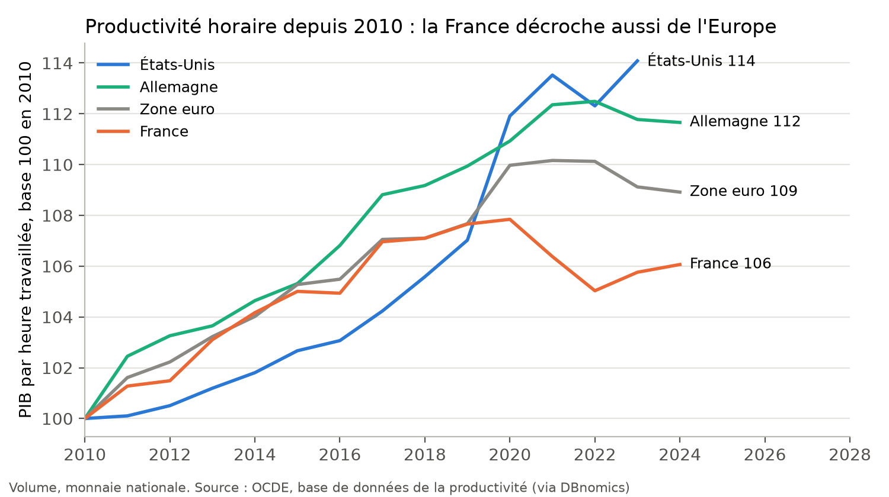

← Tous les thèmes · 6 sur 16
Économie, travail et entreprises
Les grandes lignes du diagnostic sont confirmées, mais deux chiffres sont loin des données ou mal étiquetés.
- ✓Exact 1
- ≈Proche 2
- !À nuancer 1
- ✕Inexact 1
5 affirmations · 8 sources
1Ce qu'il dit
Ses mots, avant toute vérification. Les étiquettes numérotées renvoient à l'affirmation vérifiée plus bas, sous le même numéro.
Diagnostic
Le « mal français » viendrait de l'excès de charges, des rigidités du droit du travail et d'une culture hostile au risque. Il en voit les symptômes dans :
un déficit commercial devenu « structurel », de 80 à 114 Md€ selon les années ;
une désindustrialisation : « 10,6 % du PIB contre 16 % pour l'Italie et 13,6 % pour l'Espagne », « moins de 10 % contre 19 % en Allemagne » ;
un décrochage de productivité face aux États-Unis : « +22 % aux États-Unis, +5 % en Europe » de 2010 à 2023, d'après le rapport Draghi ;
un chômage des jeunes élevé : « 18,8 % contre 6,7 % en Allemagne » ;
un sous-investissement dans la recherche : « 2,2 % du PIB contre 3,1 % en Allemagne et 3,5 % aux États-Unis ».
Mesures proposées
Baisser les impôts de production et l'impôt sur les sociétés (thème 1), alléger les cotisations au-dessus de 1,6 SMIC.
Créer un contrat de travail unique pour les nouveaux emplois.
Plafonner les aides sociales
À 90 % du SMIC et créer une allocation sociale unique.
Développer des filières d'avenir (IA, robotique, spatial), des zones franches industrielles, réorienter l'épargne retraite vers les entreprises non cotées.
Ces mesures sont des choix de politique économique. Le contrat unique est défendu par une partie de la littérature (Blanchard-Tirole, Cahuc-Kramarz) ; ses effets ne sont pas testés ici.
2Ce que disent les chiffres
Une carte par affirmation : l'étiquette dit en quoi la phrase s'écarte des chiffres, la ligne en dessous dit pourquoi. Ouvrir une carte pour lire la citation exacte, l'explication, le calcul et les sources.
1≈Arrondi« Le déficit commercial fut d'environ 80 milliards d'euros en 2024 » (avril 2026)Selon la définition, le déficit des échanges de biens va de 55 à 103 Md€ en 2024. Le chiffre des douanes françaises est autour de 80 Md€.
« Le déficit commercial fut d’environ 80 milliards d'euros en 2024. »
David Lisnard, x : Tweets de David Lisnard (@davidlisnard) — avril 2026, avril 2026 · voir la source
≈Arrondi
L'ordre de grandeur est le bon ; le chiffre est arrondi, souvent dans le sens qui l'arrange.
Proche Confiance : moyenne (trois sources, trois définitions)
- Ce qu'il annonce
- Données publiques
Pourquoi
- En 2024, le solde des échanges de biens est de −103 Md€ selon les données douanières d'Eurostat (importations coût, assurance et fret compris) et de −55 Md€ selon les comptes nationaux. Le chiffre des douanes françaises, que reprend la presse, se situe entre les deux, autour de −80 Md€.
- Ses autres chiffres suivent l'évolution réelle : le record de 2022 (« 114 milliards en un an » à mi-2022 ; −193 Md€ sur l'année selon Eurostat) et le « structurel à 100 milliards » en 2023-2024.
- Depuis 2023, le déficit se réduit, surtout grâce à la baisse de la facture énergétique. En biens et services, il n'est plus que de −11 à −14 Md€ en 2024-2025 : les services sont excédentaires.
Ses autres formulations (3)
- « 114 milliards en un an » (25/08/2022)
- « un déficit commercial structurel de 100 milliards d’euros » (19/07/2024)
- « Les champions qui nous gouvernent […] ont créé 100 milliards de déficit de commerce » (26/06/2024)
Le calcul
Déficit commercial
- Entrées :
EUROSTAT-COMMERCE-DOUANES(solde des échanges de biens de la France avec le monde, données douanières, importations valorisées CAF) ;EUROSTAT-COMMERCE-BIENS(exportations P61 et importations P71 de biens, comptes nationaux). - Le chiffre publié par les douanes françaises (importations FAB, hors frais de transport) se situe entre les deux. Il n'a pas pu être téléchargé : le site des douanes n'a pas d'API ouverte.
Résultats du calcul
Ce qu'il dit : 114 Md€ (12 mois à juin 2022) ; 100 Md€ « structurel » ; 80 Md€ (2024)
| Mesure | Cas | Valeur | Remarque |
|---|---|---|---|
| Solde des échanges de biens | douanes (Eurostat), 2022 | −193,14 Md€ | importations valorisées CAF (avec transport et assurance) : déficit plus large que le chiffre français FAB-FAB |
| Solde des échanges de biens | comptes nationaux, 2022 | −131,75 Md€ | biens et services : -72.5 Md€ |
| Solde des échanges de biens | douanes (Eurostat), 2023 | −126,78 Md€ | importations valorisées CAF (avec transport et assurance) : déficit plus large que le chiffre français FAB-FAB |
| Solde des échanges de biens | comptes nationaux, 2023 | −80,93 Md€ | biens et services : -49.4 Md€ |
| Solde des échanges de biens | douanes (Eurostat), 2024 | −102,64 Md€ | importations valorisées CAF (avec transport et assurance) : déficit plus large que le chiffre français FAB-FAB |
| Solde des échanges de biens | comptes nationaux, 2024 | −55,33 Md€ | biens et services : -10.7 Md€ |
| Solde des échanges de biens | douanes (Eurostat), 2025 | −89,59 Md€ | importations valorisées CAF (avec transport et assurance) : déficit plus large que le chiffre français FAB-FAB |
| Solde des échanges de biens | comptes nationaux, 2025 | −53,7 Md€ | biens et services : -14.4 Md€ |
Les sources (2)
- AEurostat (comptes nationaux) · Exportations et importations de biens, prix courants (nama_10_gdp, P61 et P71) · relevé le 14/11/2026 ·
EUROSTAT-COMMERCE-BIENS - AEurostat (statistiques du commerce international de biens, données douanières) · Solde, exportations et importations de biens de la France avec le monde (ext_lt_intratrd) · relevé le 14/11/2026 ·
EUROSTAT-COMMERCE-DOUANES
2≈Périmètres mélangés« En part du PIB, la France est l'un des pays devenus les moins industrialisés d'Europe : 10,6 %, contre 16 % pour l'Italie et 13,6 % pour l'Espagne » (avril 2026)Le chiffre français est juste (10,2 % du PIB, 5e plus faible de l'UE). Mais l'Espagne est à 10,8 %, presque comme la France, et non à 13,6 %.
« En part du PIB, la France est l'un des pays devenu les moins industrialisés d'Europe : 10,6%, contre par exemple 16% pour l'Italie et 13,6% pour l'Espagne. »
David Lisnard, x : Tweets de David Lisnard (@davidlisnard) — avril 2026, avril 2026 · voir la source
≈Périmètres mélangés
Le chiffre existe, mais il ne mesure pas ce que dit la phrase, ou il est comparé à un chiffre qui ne couvre pas la même chose.
Proche Confiance : forte
- Ce qu'il annonce
- Données publiques
Pourquoi
- En 2024, l'industrie manufacturière représente 10,2 % du PIB en France (11,4 % de la valeur ajoutée). Ses « 10,3 % » et « 10,6 % » sont exacts à quelques dixièmes près. La France est la 5e moins industrialisée de l'UE, après le Luxembourg, Chypre, Malte et la Grèce. En 2000, l'industrie représentait 16 % de sa valeur ajoutée.
- Les comparaisons sont moins rigoureuses. L'Italie est à 15,0 % du PIB, il dit 16 %. L'Allemagne est à 18,1 %, il dit 19 %. L'Espagne est à 10,8 %, presque comme la France, et non à 13,6 %. Il semble mélanger la part du PIB, la part de la valeur ajoutée et l'industrie au sens large (énergie et mines comprises).
Ses autres formulations (2)
- « L’industrie représente moins de 10 % du PIB français contre 19 % en Allemagne » (15/05/2026)
- « on n'est plus qu'à 10,3 % de PIB produit par la production industrielle » (29/08/2026)
Le calcul
Poids de l'industrie
- Entrées :
EUROSTAT-VA-BRANCHES(valeur ajoutée brute par branche : C industrie manufacturière, B-E industrie au sens large, TOTAL) ;EUROSTAT-PIB-PAYS(PIB). - Calculs : valeur ajoutée de l'industrie manufacturière / PIB et / valeur ajoutée totale (la valeur ajoutée totale représente environ 89 % du PIB) ; rang dans l'UE à 27 de la part manufacturière.
Résultats du calcul
Ce qu'il dit : 10,6 % ; 10,3 % ; moins de 10 % · 16 % · 13,6 % · 19 % · « l'un des pays les moins industrialisés d'Europe »
| Mesure | Cas | Valeur | Remarque |
|---|---|---|---|
| Industrie manufacturière, % du PIB | France, 2024 | 10,16 % du PIB | 11.4 % de la valeur ajoutée ; industrie au sens large (B-E) 12.5 % du PIB |
| Industrie manufacturière, % du PIB | Italie, 2024 | 14,97 % du PIB | 16.7 % de la valeur ajoutée ; industrie au sens large (B-E) 17.7 % du PIB |
| Industrie manufacturière, % du PIB | Espagne, 2024 | 10,8 % du PIB | 11.9 % de la valeur ajoutée ; industrie au sens large (B-E) 14.2 % du PIB |
| Industrie manufacturière, % du PIB | Allemagne, 2024 | 18,08 % du PIB | 19.9 % de la valeur ajoutée ; industrie au sens large (B-E) 21.2 % du PIB |
| Industrie manufacturière, % du PIB | UE à 27, 2024 | 14,44 % du PIB | 16.1 % de la valeur ajoutée ; industrie au sens large (B-E) 17.5 % du PIB |
| Rang de la France du moins au plus industrialisé (part de l'industrie manufacturière) | UE à 27, 2024 | 5,0 rang | devant la France : LU, CY, MT, EL |
| Industrie manufacturière, % de la valeur ajoutée | France, 2000 | 16,07 % |
Les sources (2)
- AEurostat (comptes nationaux) · PIB aux prix courants, pays comparés (nama_10_gdp, B1GQ) · relevé le 14/11/2026 ·
EUROSTAT-PIB-PAYS - AEurostat (comptes nationaux) · Valeur ajoutée brute par branche (nama_10_a10) · relevé le 14/11/2026 ·
EUROSTAT-VA-BRANCHES
3✕Chiffre grossi« De 2010 à 2023, la productivité du travail a progressé de 22 % aux États-Unis et de 5 % en Europe » (Livre noir, 09/2026)Selon l'OCDE : +14,1 % aux États-Unis et +9,1 % dans la zone euro. Son « 5 % » est en fait celui de la France. Le décrochage existe, mais pas dans ces proportions.
« Les chiffres sont là : de 2010 à 2023, la productivité du travail a progressé de 22% aux États-Unis et de 5% en Europe. »
David Lisnard, documents : Le Livre noir de la bureaucratie — Nouvelle Énergie, 1er septembre 2026 · voir la source
✕Chiffre grossi
La réalité va dans le même sens, mais le chiffre réel est nettement plus faible.
Inexact Confiance : forte
- Ce qu'il annonce
- Données publiques
- Point de comparaison
Pourquoi
- Selon l'OCDE, le PIB par heure travaillée a augmenté de 14,1 % aux États-Unis, 9,1 % dans la zone euro, 11,8 % en Allemagne et 5,8 % en France de 2010 à 2023. Il majore les États-Unis de moitié et minore l'Europe de moitié. Son « 5 % » est en fait celui de la France.
- Sa version tirée du rapport Draghi (« 98 % du niveau américain en 1995, 82 % en 2019 ») n'est pas reproduite par les séries actuelles de l'OCDE en parités courantes (88 % en 1995, 90 % en 2019, 87 % en 2023). L'écart vient des méthodes de comparaison des niveaux. La divergence depuis 2019 est bien réelle.
- Conclusion : le décrochage de productivité existe, surtout pour la France depuis 2019. Mais les chiffres qu'il avance ne sont pas les bons.

Ses autres formulations (1)
- « La productivité horaire de la zone euro, qui atteignait 98 % de celle des États-Unis en 1995, n’en représentait plus que 82 % en 2019 » (15/05/2026, citant le rapport Draghi)
Le calcul
Productivité
- Entrée :
OCDE-PRODUCTIVITE(PIB par heure travaillée : volume en monnaie nationale pour la croissance ; dollars en parités de pouvoir d'achat courantes pour comparer les niveaux). - Calculs : hausse 2010 → 2023 ; rapport zone euro / États-Unis en 1995, 2019, 2023.
- Le rapport Draghi utilise des niveaux en parités de pouvoir d'achat constantes et une autre base de calcul. Les séries actuelles de l'OCDE ne reproduisent pas le passage de 98 % à 82 %.
Résultats du calcul
Ce qu'il dit : +22 % aux États-Unis, +5 % en Europe · 98 % (1995) ; 82 % (2019)
| Mesure | Cas | Valeur | Remarque |
|---|---|---|---|
| Hausse du PIB par heure travaillée (volume) | États-Unis, 2010 → 2023 | 14,08 % | |
| Hausse du PIB par heure travaillée (volume) | zone euro, 2010 → 2023 | 9,12 % | |
| Hausse du PIB par heure travaillée (volume) | France, 2010 → 2023 | 5,76 % | |
| Hausse du PIB par heure travaillée (volume) | Allemagne, 2010 → 2023 | 11,77 % | |
| Productivité horaire de la zone euro / États-Unis | 1995, parités de pouvoir d'achat courantes | 88,19 % | |
| Productivité horaire de la zone euro / États-Unis | 2019, parités de pouvoir d'achat courantes | 89,9 % | |
| Productivité horaire de la zone euro / États-Unis | 2023, parités de pouvoir d'achat courantes | 87,32 % |
Les sources (1)
- AOCDE (base de données de la productivité, diffusée par DBnomics) · PIB par heure travaillée, volume, États-Unis, zone euro, France, Allemagne · relevé le 14/11/2026 ·
OCDE-PRODUCTIVITE
4✓Exact« Le chômage des 15-24 ans atteint 18,8 %, contre 6,7 % en Allemagne et moins de 15 % en moyenne dans la zone euro » (29/01/2026)Eurostat donne pour 2024 : France 18,8 %, Allemagne 6,6 %, zone euro 14,7 %.
« Le chômage des 15-24 ans atteint 18,8 %, contre 6,7 % en Allemagne et moins de 15 % en moyenne dans la zone euro. »
David Lisnard, articles : Budget : la jeunesse sacrifiée, 29 janvier 2026 · voir la source
✓Exact
Confirmé par les données publiques.
Exact Confiance : forte
- Ce qu'il annonce
- Données publiques
Pourquoi
- En 2024 (dernière année connue en janvier 2026) : France 18,8 %, Allemagne 6,6 %, zone euro 14,7 %. En 2025, le chômage des jeunes a encore augmenté en France (19,8 %).
- « 8,1 % de chômage au 1er trimestre 2026 (Insee) » : Eurostat publie 8,2 % pour le même trimestre. C'est cohérent.
Ses autres formulations (1)
- « L'INSEE confirme : 8,1 % de chômage au 1er trimestre 2026 » (22/05/2026)
Le calcul
Chômage
- Entrées :
EUROSTAT-CHOMAGE-ANNUEL(taux de chômage au sens du BIT, 15-24 ans, France, Allemagne, zone euro à 21, UE) ;EUROSTAT-CHOMAGE-TRIM(France, 15-74 ans, données corrigées des variations saisonnières).
Résultats du calcul
Ce qu'il dit : 18,8 % ; Allemagne 6,7 % ; zone euro moins de 15 % · 8,1 % (Insee)
| Mesure | Cas | Valeur | Remarque |
|---|---|---|---|
| Taux de chômage des jeunes, France | 15-24 ans, 2024 | 18,8 % | Allemagne 6.6 % ; zone euro (EA21) 14.7 % ; UE 15.0 % |
| Taux de chômage des jeunes, France | 15-24 ans, 2025 | 19,8 % | Allemagne 7.1 % ; zone euro (EA21) 14.9 % ; UE 15.2 % |
| Taux de chômage, France (corrigé des variations saisonnières, Eurostat) | 1er trimestre 2026 | 8,2 % | l'Insee publie sa propre estimation, légèrement différente |
Les sources (2)
- AEurostat (enquête sur les forces de travail) · Taux de chômage par âge, annuel (une_rt_a) · relevé le 14/11/2026 ·
EUROSTAT-CHOMAGE-ANNUEL - AEurostat (enquête sur les forces de travail) · Taux de chômage trimestriel corrigé des variations saisonnières (une_rt_q) · relevé le 14/11/2026 ·
EUROSTAT-CHOMAGE-TRIM
5!Périmètres mélangés« La recherche publique : la France y consacre 2,2 % du PIB contre 3,1 % en Allemagne et 3,5 % aux États-Unis » (15/05/2026)Ses chiffres sont ceux de la recherche totale, entreprises comprises. Pour la seule recherche publique, la France dépense un peu plus que les États-Unis.
« Celle de la recherche publique : la France y consacre 2,2 % du PIB contre 3,1 % en Allemagne et 3,5 % aux États-Unis »
David Lisnard, articles : « La réindustrialisation est une priorité nationale », 15 mai 2026 · voir la source
!Périmètres mélangés
Le chiffre existe, mais il ne mesure pas ce que dit la phrase, ou il est comparé à un chiffre qui ne couvre pas la même chose.
À nuancer Confiance : forte
- Ce qu'il annonce
- Données publiques
Pourquoi
- Les chiffres sont exacts, mais pour la R&D totale (entreprises comprises) : 2,17 % en France, 3,10 % en Allemagne et 3,42 % aux États-Unis en 2023.
- La recherche publique (État et universités) représente 0,70 % du PIB en France, 0,90 % en Allemagne et 0,65 % aux États-Unis. Le retard français vient de la R&D des entreprises (1,43 % contre 2,66 % aux États-Unis), pas de la recherche publique.
- Son argument de fond (la France investit moins dans la recherche) est juste, mais le diagnostic est mal placé, ce qui change les remèdes.
Le calcul
Recherche et développement
- Entrée :
EUROSTAT-RD(dépense intérieure de R&D en % du PIB par secteur d'exécution : entreprises BES, État GOV, enseignement supérieur HES ; 2023). - La « recherche publique » correspond aux secteurs GOV + HES ; la dépense totale ajoute les entreprises.
Résultats du calcul
Ce qu'il dit : 2,2 % · 3,1 % · 3,5 %
| Mesure | Cas | Valeur | Remarque |
|---|---|---|---|
| Dépense intérieure de R&D totale, % du PIB | France, 2023 | 2,17 % du PIB | |
| R&D exécutée par l'État et l'enseignement supérieur (« recherche publique »), % du PIB | France, 2023 | 0,7 % du PIB | entreprises : 1.43 % du PIB |
| Dépense intérieure de R&D totale, % du PIB | Allemagne, 2023 | 3,1 % du PIB | |
| R&D exécutée par l'État et l'enseignement supérieur (« recherche publique »), % du PIB | Allemagne, 2023 | 0,9 % du PIB | entreprises : 2.12 % du PIB |
| Dépense intérieure de R&D totale, % du PIB | États-Unis, 2023 | 3,42 % du PIB | |
| R&D exécutée par l'État et l'enseignement supérieur (« recherche publique »), % du PIB | États-Unis, 2023 | 0,65 % du PIB | entreprises : 2.66 % du PIB |
Les sources (1)
- AEurostat · Dépense intérieure de recherche et développement par secteur d'exécution, % du PIB (rd_e_gerdtot) · relevé le 14/11/2026 ·
EUROSTAT-RD
3Conclusion
Les grandes lignes du diagnostic sont confirmées :
- un déficit commercial durable ;
- une industrie manufacturière réduite à 10 % du PIB, la 5e plus faible de l'UE ;
- une productivité française qui stagne ;
- un chômage des jeunes près de trois fois plus élevé qu'en Allemagne.
Mais deux chiffres sont faux ou mal étiquetés. La productivité américaine n'a pas augmenté de 22 % depuis 2010 mais de 14 %, et l'Europe de 9 %, pas de 5 %. C'est la France qui est à 6 %. Ses chiffres de recherche sont ceux de la R&D totale, pas de la « recherche publique ». Sur la seule recherche publique, la France dépense un peu plus que les États-Unis.
Conventions de calcul
Résultats produits par calculer.py à partir de brut/ (catalogue sources.csv), dans resultats.csv. Aucun chiffre n'est lu dans un PDF pour ce thème. Données téléchargées le 14/11/2026.
Toutes les sources du thème (8)
A Statistique publique (Insee, Eurostat, OCDE, ministères…)
- AEurostat · Dépense intérieure de recherche et développement par secteur d'exécution, % du PIB (rd_e_gerdtot) · relevé le 14/11/2026 ·
EUROSTAT-RD - AEurostat (comptes nationaux) · Exportations et importations de biens, prix courants (nama_10_gdp, P61 et P71) · relevé le 14/11/2026 ·
EUROSTAT-COMMERCE-BIENS - AEurostat (comptes nationaux) · PIB aux prix courants, pays comparés (nama_10_gdp, B1GQ) · relevé le 14/11/2026 ·
EUROSTAT-PIB-PAYS - AEurostat (comptes nationaux) · Valeur ajoutée brute par branche (nama_10_a10) · relevé le 14/11/2026 ·
EUROSTAT-VA-BRANCHES - AEurostat (enquête sur les forces de travail) · Taux de chômage par âge, annuel (une_rt_a) · relevé le 14/11/2026 ·
EUROSTAT-CHOMAGE-ANNUEL - AEurostat (enquête sur les forces de travail) · Taux de chômage trimestriel corrigé des variations saisonnières (une_rt_q) · relevé le 14/11/2026 ·
EUROSTAT-CHOMAGE-TRIM - AEurostat (statistiques du commerce international de biens, données douanières) · Solde, exportations et importations de biens de la France avec le monde (ext_lt_intratrd) · relevé le 14/11/2026 ·
EUROSTAT-COMMERCE-DOUANES - AOCDE (base de données de la productivité, diffusée par DBnomics) · PIB par heure travaillée, volume, États-Unis, zone euro, France, Allemagne · relevé le 14/11/2026 ·
OCDE-PRODUCTIVITE